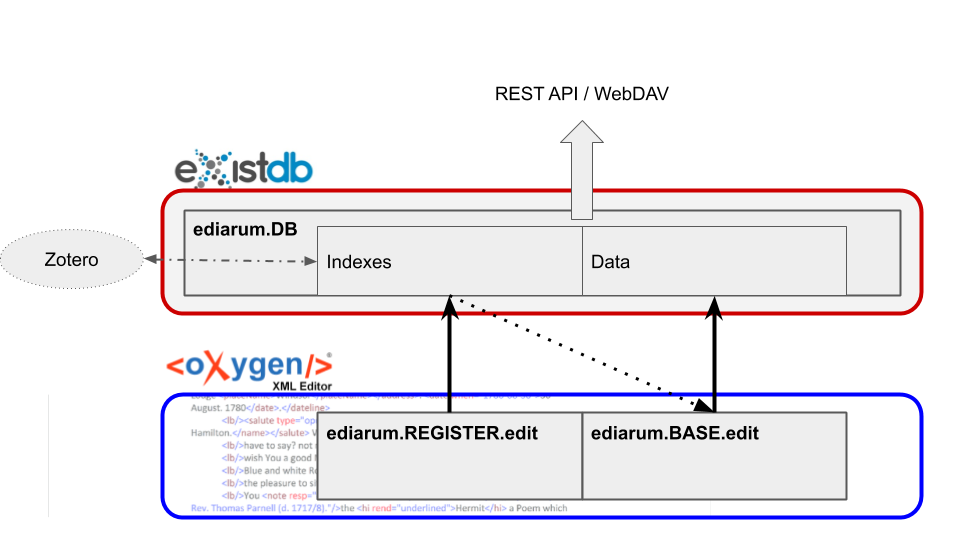
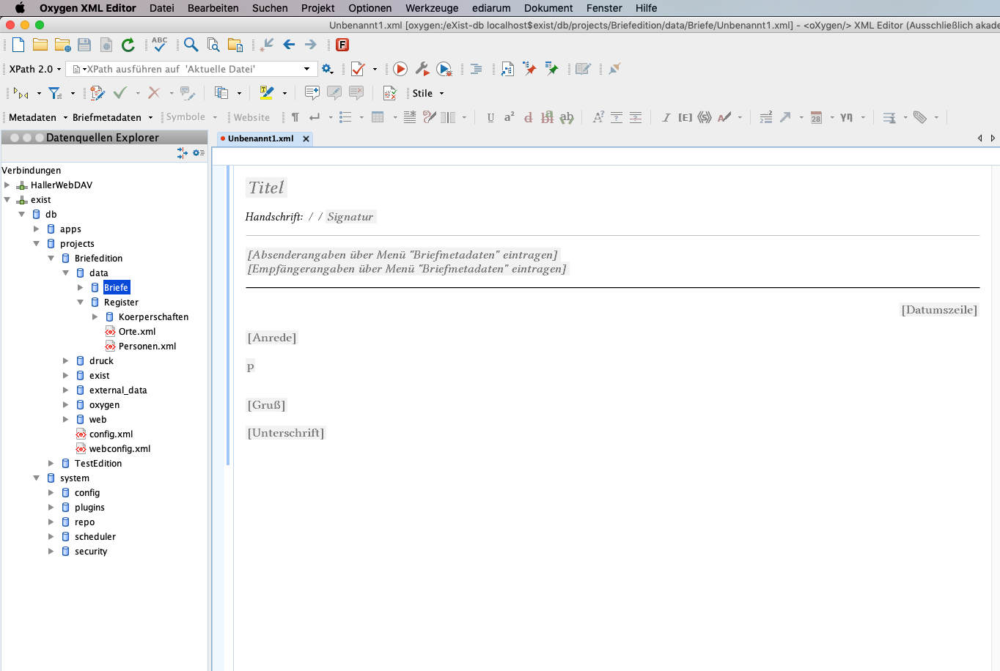
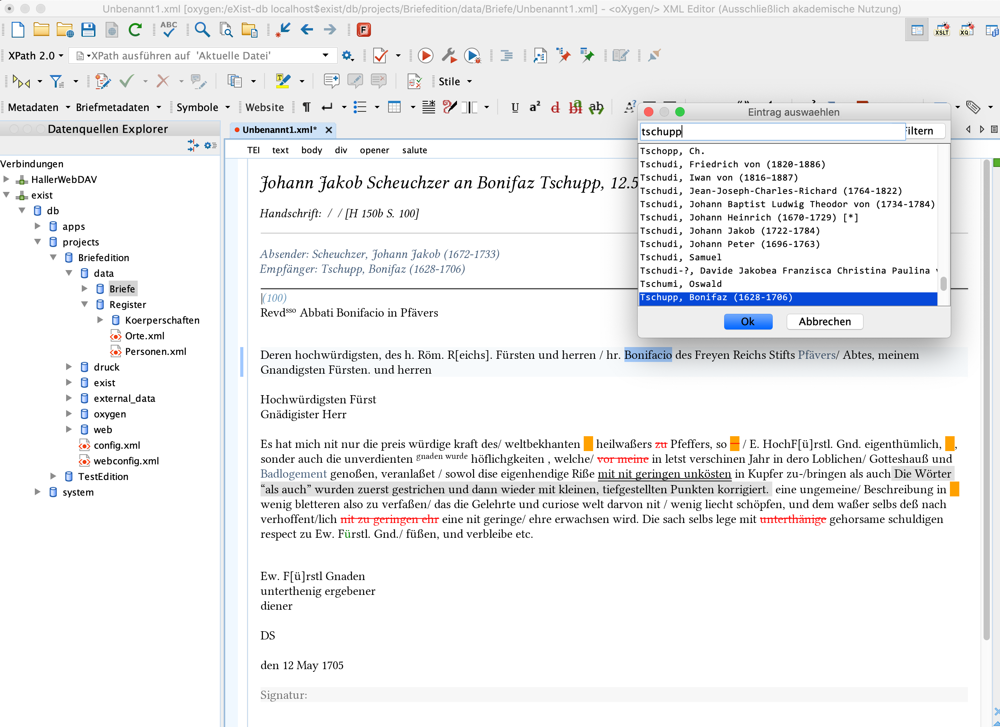
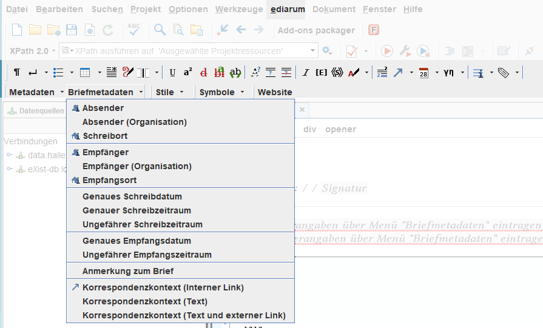
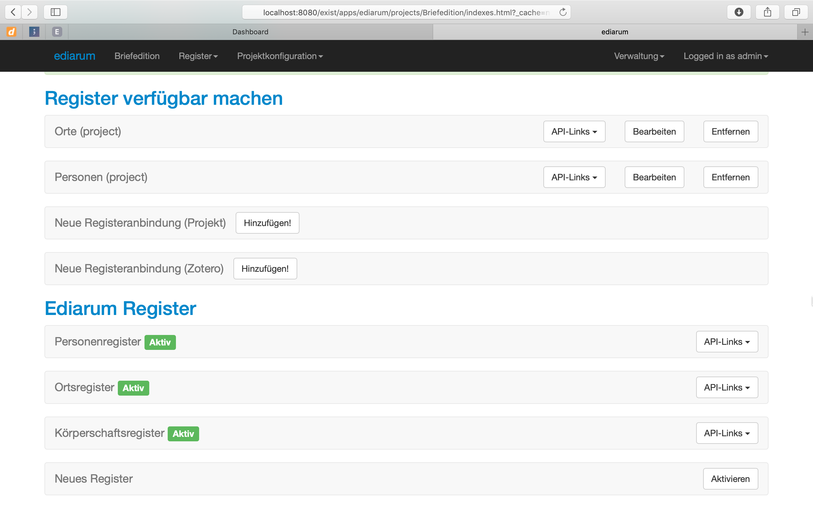

Ediarum. A toolbox for editors and developers
Table of Contents
Abstract
ediarum.DB, ediarum.BASE.edit and ediarum.REGISTER.edit are the three currently released modules of the ediarum editing environment developed by the TELOTA initiative at the BBAW in Berlin. The set of two frameworks for the Oxygen XML Editor and one exist-db application aims to support digital scholarly editors in generating and annotating TEI-XML Data. The frameworks offer a graphical interface within Oxygen XML Editor to add mark-up and metadata for a subset of TEI elements without the need of manually editing XML files. The modules are open-source and intended to be used as a starting point or toolbox for other developers to create project-specific customized frameworks. Despite some parts of the modules only being available in German as of this moment, and some need for improved documentation, the ediarum modules already offer a flexible and open way for researchers to edit their TEI data and a resource for other developers to build upon in their projects.
Introduction
This review examines three tools: ediarum.DB, ediarum.BASE.edit and ediarum.REGISTER.edit, which are part of the continuously developed "work and publication environment for scholarly editing" ediarum 1 developed by the Berlin-Brandenburg Academy of Sciences and Humanities (Berlin-Brandenburgische Akademie der Wissenschaften, BBAW). The first release from the ediarum software environment was ediarum.JAR in December 2013, a module which is now integrated into the three modules reviewed. The modules discussed here were released throughout 2018. For this review I am using ediarum.DB 3.2.5 2, ediarum.BASE.edit 1.1.1 3, and ediarum.REGISTER.edit 1.0.1. Integrated into those modules is ediarum.JAR 3.1.0. As indicated by the leading version number, they can be considered as ‘ready for production’, although, as is the nature of continuously developed software, are likely to be further developed and improved in the future. Further modules (eg. for print and web publication) of ediarum have been announced and are internally already being used (Dumont and Fechner 2019) but have not yet been released publicly and will therefore not be the subject of this review which will limit itself to the three modules available at this time. These three tools are also what I will be referring to as ediarum in this article. For the purpose of this review, I used a MacOS 10 System with Java Runtime Environment 8, Oxygen XML Editor version 21 and eXist-db version 4.4.
Ediarum, at its core, is a set of extensions for two other applications, namely the Oxygen XML Editor 4 and eXist-db 5. These two applications are widely used by projects in the context of digital scholarly editions and ediarum aims to provide an environment optimized for working with transcriptions and the markup of these transcriptions within those tools. It allows the user to work with XML data, specifically TEI, by using a graphical user interface without having to manually write XML in a text editor. ediarum.BASE.edit and ediarum.REGISTER.edit are so-called ‘frameworks’ for the Author mode of Oxygen. The Author mode is an alternative way to display XML files that allows users to edit the documents in a way that is much closer to a WYSIWYG editor or a word processor. The two ‘edit’ modules of ediarum are customized to offer the most common functionality an editor of TEI XML Data would need, such as the easy generation of metadata fields, markup of structural text elements, textual phenomena and entities. These are supplemented by the ediarum.DB module, which uses the eXist-db database to provide a central repository for the XML data, and for central indexes of entities that can then be directly looked up and referenced from Oxygen. In addition to this, it allows the sharing of this data via a REST API or via WebDAV. It should be noted that ediarum is not intended and marketed as a plug-and-play solution for any particular usecase, but rather a toolbox6 that can be adapted for the specific uses of any one project.7
It is being developed by the TELOTA (The Electronic Life Of The Academy) initiative at the BBAW in Berlin by lead developers Stefan Dumont, Martin Fechner, and Sascha Grabsch. After being used for projects at the BBAW internally for many years, modules are released successively to the public via a GitHub repository8, which includes all relevant contact information, licenses, and acknowledgments.
Methodology and Implementation
At a high level of methodological abstraction, one can ask in what part of the scientific, in this instance, the editorial process a tool attempts to support the researcher. In the case of ediarum, it is the idea of generating knowledge by explicating information present in source documents. A source document, in this case, would, for example, be a letter. A transcription of such a letter in its most rudimentary form has only linguistic information, as it is only a string of text, if it were transcribed line by line it would already have rudimentary structural information. While this might be sufficient for projects with pure archival or collection goal, the next step in the editorial workflow would be the markup and therefore the explicit manifestation of structural information, of known entities within the text and the addition of metadata. All this with the aim of making the implicit structures and relations within a text or a corpus of texts explicit and to allow further interpretation and research to be done on the basis of this information. XML, specifically the TEI standard has established itself as the most widely used technical solution for this problem but using it to its full potential requires a certain degree of technical familiarity and willingness to work with XML. Ediarum attempts to bridge the gap between humanities researchers and the possibilities of XML markup, to empower them to perform the above-mentioned task of explicating and adding information to documents without having to familiarize themselves with the technicalities of XML and TEI.
Comparing ediarum in relation to other tools that tackle this problem, it becomes evident that its solution is a unique one. While there are many text annotation tools, the majority focuses on linguistic annotation for Natural Language Processing (NLP) and Machine Learning. Others like Annotation Studio9 offers only very simplistic text annotation for literary/archival texts in a web interface. The Classical Text Editor10 offers a vast array of possibilities for editors in a related field, but is a closed commercial application with the option to export TEI/XML. A tool that, on the surface, has some similarities is FuD, the research environment developed by the University of Trier.11 FuD is a stand-alone piece of software which intentions far exceed those of ediarum but it also includes a central repository for data and indexes, metadata input on file creation and text markup and annotation. As opposed to ediarum, FuD, developed by a large team since 2004, is marketed as a fully featured software solution for small to large projects. Individualized frameworks and environments are developed on demand for larger customers. On a technical level, the key difference here is the integration into the XML text editing workflow. Ediarum is not an application that creates XML Data, it is instead an additional layer on top of the actual data with manual text editing possible at any point. It is based not on the paradigm of an abstract input form that eventually outputs the final data format, but on the idea of being an additional aid and tool for an editor to use while working directly in the data. The aim of ediarum is to make the editing workflow easier and more comfortable, especially for those researchers, that do not have a background or an affinity to XML code. It offers a cleaner way to working with the texts while at the same keeping the entire depth of complexity of XML Data at close reach.
Looking at the work of developers in DH projects, instead of editors and researchers, one can see another process that ediarum potentially can have an impact on. Staying within the ‘toolbox’ metaphor, ediarum not only can be seen as a toolbox for editors but also as a toolbox for other developers to be used in their projects. Developers can use ediarum in its default configuration or with only minor adjustments or they can use only select functionality and integrate it into their own custom frameworks. Due to the open-source nature of the project and the separate availability of ediarum.JAR, which includes the core methods used in the other three modules, both types of reuse are actively encouraged. Therefore the paradigm at play here is not that of software as a fully packaged service or solution shipped to consumers, but as tools and smaller applications to be integrated into individual workflows.
As mentioned before, the tools are extensions of the pre-existing software and thus obviously have a dependency on both. While eXist-db is fully open source, Oxygen XML Editor is a closed source commercial application. It seems at first problematic to make an open-source tool dependent on commercial software, especially since ediarum itself explicitly supports the idea of it being adapted and modified by other developers. In defense, the case could be made, that since Oxygen is such a predominant and ubiquitous tool, its availability can be seen as a given for any project or researchers within the field. The benefit of depending and building on Oxygen is the familiarity that many developers and researcher will have with it. This close relation to both eXist-db and Oxygen also determines the in- and output format for ediarum. XML is, of course, the main format as both its base programs are designed for it and it is the de facto standard for the relevant usecase. Any conversion possibility is the domain of the base Oxygen software. An XML file created with ediarum is per definition not different from any XML file, ‘written by hand’ and thus all the possibilities of conversion, character encoding, export and import functions into other workflows are those of Oxygen and eXist-db respectively.
In addition to that, the ediarum.DB application for eXist-db offers the possibility of interfacing with the indexes by means of a REST API, so any other web application can make use of the indexes created with ediarum as they are being created. Another possibility of interoperability is the interface that exists with Zotero bibliographies which can be synchronized with the indexes (Fig. 1).

Due to its history as an internal tool of the BBAW, ediarum has been employed in many of their academy projects such as: ‘Schleiermacher in Berlin 1808-1834. Briefwechsel, Tageskalender, Vorlesungen’12, ‘Alexander von Humboldt auf Reisen. Wissenschaft aus der Bewegung’13 and the ‘Marx-Engels-Gesamtausgabe’14 to name a few. In those cases, other modules e.g. for web publication have also been used that have, as of yet, not been released to the public. Beyond those internal projects, it is unclear if the three modules released in late 2018 have already seen use in projects from other institutions but due to developer workshops taking place in 2019 they will likely see further application. I have personally used some of the functions of the ediarum.JAR modules in my development of a custom framework even before the three more fully developed modules were released.
An example usecase
Let us assume the following usecase. A project that already includes some letters and indexes of places or persons. The editor now wants to add a new transcription to the project. They will use the Data Source Explorer within Oxygen to create a new file by selecting the ‘letter’ template that comes with the default ediarum framework (in addition to a template for introductory texts, and manuscripts). Before the file is created, the editor can enter the name of the archive and collection and the signature of the letter. This will then create an XML file with the basic elements like the teiHeader and body elements like ‘opener’, ‘salute’ etc. already in place (Fig. 2).

The text of the letter can be inserted into the pre-existing structural elements. Once the raw text has been copied into the file, the mark-up functions can be used. These include different types of deletions and additions, types of emphasis and comments. The indexes can also be used here to markup entities in the text, by selecting them in the editor and then selecting the corresponding entry from the index (Fig. 3).

Deployment and learning curve
The modules are available on individual public GitHub repositories. The ediarum.DB repository includes a documentation that explains the installation process, the integration into eXist-db as well as the GUI and how to implement advanced functionality. Assuming prior experience with the basic functionalities of eXist-db, the setup of ediarum.DB is very straightforward. The documentation sections of ediarum.BASE.edit and ediarum.REGISTER.edit only offer a ‘tba’ placeholder as of the time of this review. Therefore, while the setup process of ediarum.DB is sufficiently documented, the specifics of how the frameworks have to be integrated into the local Oxygen installation, how to connect and interface with the database are not documented.15 A developer attempting to set-up or customize ediarum.BASE.edit and REGISTER.edit will need to have solid knowledge of the Oxygen Author mode and CSS to be able to adapt the frameworks for a specific usecase. By means of GitHub technical support can easily be found by using the issue system. The developers seem to respond quickly on these channels and also offer an additional mailing list.
Looking at the learning curve of the tools, let’s consider first the developer, who wants to install and/or customize ediarum for their project. The initial set-up of the database portion is straight forward thanks to the documentation. The eXist-db module in the form of a ‘.xar’ file is ready for use after an import in the local eXist-db installation. The user interface of the exist-db application is clear and the initialization of indexes, the set-up of user accounts and other administration tasks can be learned quickly. On the side of Oxygen, some knowledge of the framework system and specifically the Author mode view is necessary when customizing the ediarum.BASE and REGISTER framework for a specific project. The requirements to the developer scale with the depth of the desired customizations. One example ‘letter’ that exhibits various type of mark-up and metadata is shown the implementation of these functions. This can be used as a starting point for testing and customization, and combined with a study of the source code will give developer insight into how they can add and modify the framework for their purposes.
From the point of view of the ‘end user’, the non-DH researcher and editor, navigation and use of the framework, once it is installed, is largely self-explanatory and intuitive. All specific additional functionality is available through the Oxygen GUI, primarily a custom toolbar through which the various functions are available. Even a user with no experience in using Oxygen will quickly find themselves at home, as similar toolbars and icons are found in any office suite.
Due to the nature of both Oxygen and eXist-db as JAVA-based and cross-platform applications, the user experience is identical across Windows, MacOS and Linux. Any system supported by the Oxygen XML Editor will be able to run ediarum (It is optimized for Oxygen XML Editor version 20.1.). Any instance of eXist-db, independent from the system on which it is installed on, can install the ediarum.DB module (eXist-db version 3.5 and 4.4. are explicitly supported). Interoperability with external applications is provided via the REST API of eXist-db through which the indexes can be accessed. There is also a specific API connection to Zotero provided which will keep indexes in synchronization with Zotero bibliographies.
Open Source and extensibility
The source code is openly available on GitHub16 and is distributed under and the terms of the GNU General Public License 317 (or > later) although it makes use of some third-party software that is separately licensed under different terms, such as Bootstrap (MIT License) or the ‘tei.jar’ module and licenses under the 3-clause BSD licenses.18 This is clearly and properly stated in the readme files /> as well as license files included in the repository. In addition to GitHub, ediarum.BASE.edit and ediarum.DB are also available on the research repository Zenodo using their system of software citation.19 This ensures > that specific versions of the tools have unique DOI and thus can be referred to and cited precisely and equivalently to written research contributions.
Ediarum is explicitly intended to be extensible and reusable. Even through the use of the eXist-db GUI, as well as the Oxygen Author mode menus, significant customization can be achieved (e.g. setting up new indexes of entities and allowing reference to these in Oxygen, allowing the addition of arbitrary XML fragments into documents via buttons or short cuts). In case deeper customization is desired, the folder structure and files in the source code are clearly structured and named, a random sampling of files also revealed clear function names and/or commenting. This extends to projects not using exist-db or even projects not using TEI. The ediarum.JAR module, which is integrated into the two framework modules, is also available on its own. It extends the default Oxygen Author mode actions with function related to inserting data from indexes. These actions can be used in any framework build for the Author mode.
As the code is complex, it will still require some studying and analysis but a developer fluent in the relevant languages (X-technologies, CSS, potentially also JAVA) will know where to inject custom functionalities and how to integrate it with existing functions. Again, it has to be noted that the developers are continually working on the modules themselves and GitHub presents a platform for anyone wishing to extend and adapt the code. Judging by recent presentations (Dumont and Fechner 2019), the three modules that have so far been the focus of this review will be accompanied in the future by further modules that will provide functionality related to publication in web and print.
User interaction & GUI
Both Author mode frameworks employ the GUI of the Oxygen XML Editor, specifically, they provide their functionality by using menus and toolbars. The main toolbar (see Fig. 4) contains both icons and text, most of which intuitively represent the functionality they provide. Using one of these buttons often opens a pop-menu with more detailed options. (e.g. the function to mark up a ‘deletion’ in the text will allow the user to specify if the deletion was by eraser, by strikethrough or by overwriting). These will then create the corresponding TEI Element and/or attributes.


Conclusion
Recalling the stated intention of ediarum to be a ‘toolbox’ for scholarly editors and their project teams, one must acknowledge that, despite its only partial release, these tools still manage to go very far in providing just that. Projects dealing with the transcription of corpora of text or letters that want to make use of the full depth of XML markup will find ediarum empowering. Humanities scholars and researchers in those projects will be able to add rich markup to their data without having to get acquainted with XML on a technical level. Developers working with those scholars will find a starting point in the development of an appropriate custom framework and, if eXist-db is employed for the backend, even a rudimentary solution to allow collaborative work, data storage, backups, etc. Depending on how close these projects fall in line with the default configuration of ediarum, i.e. the specific sub-schema of TEI used at the BBAW and/or the predefined types of indexes, this adaptation process will take varying amounts of effort and time, but will in any case be preferable to starting from scratch. Even projects far removed from the specific TEI usecase can exploit some functionality from ediarum, as the core functions offered by the core ediarum.JAR module will work for any XML data standard.
While forms for data input and even basic transcription/markup tools are nothing new, the key advantage and contribution is the fact that this interface is integrated as a layer on top of Oxygen XML Editor, which is, of course, an extremely powerful tool. This allows for and encourages a layered or hybrid workflow. One can use the Author mode frameworks for easier work with the text itself, for access to indexes, for shortcut actions that can inject arbitrarily large and complex XML fragments into the document with one mouse click while at the same time, having the actual XML code and all the power of XPath, XSLT, XQuery etc. at hand without having to switch to another tool or the need to export the data into another format. This is an approach to software that seems tailor-made for digital humanities projects as they often include researchers that possess varying degrees of technical knowledge and have varying need for complexity all working on the same dataset.
What is holding back ediarum in its current state, is the lack of an English language interface for the default configuration and the lack of documentation for the two main modules. Non-German language projects either have to restrict themselves to using only the core JAVA functions provided by the ediarum.JAR modules or, if they choose to adopt the more developed frameworks, will have to provide their own translations. Since the developers are transparent about the fact that these modules do only form part of a larger system, and their integration into the long-term TELOTA initiative, one can be certain that ediarum will be developed further and these drawbacks will likely be addressed in future releases, some of which have already been hinted at, like ediarum.GUIDE, or ediarum.WEB. Such further development would make this ‘toolbox’ even more versatile and accessible.
Bibliography
- Dumont, Stefan, and Martin Fechner. 2015. “Bridging the Gap: Greater Usability for TEI encoding”, Journal of the Text Encoding Initiative [Online], Issue 8 | December 2014 - December 2015, Online since 09 June 2015, connection on 31 May 2019. DOI: 10.4000/jtei.1242. URL: http://journals.openedition.org/jtei/1242.
- Dumont, Stefan, and Martin Fechner. 2019. “ediarum – Arbeits- und Publikationsumgebung für digitale Editionsvorhaben” last modified April 2. Zenodo. http://doi.org/10.5281/zenodo.2621062.
- Dumont, Stefan, Sascha Grabsch, and Martin Fechner. 2019, March 19. ediarum/ediarum.BASE.edit: ediarum.BASE.edit 1.1.1 (Version v1.1.1). Zenodo. http://doi.org/10.5281/zenodo.2598148.
- Fechner, Martin. 2019, March 15. ediarum/ediarum.DB: ediarum.DB 3.2.5 (Version v3.2.5). Zenodo. http://doi.org/10.5281/zenodo.25947.
Notes
- https://web.archive.org/web/20190531085527/http://www.bbaw.de/telota/software/ediarum. ↑
- https://doi.org/10.5281/zenodo.2594779. ↑
- https://doi.org/10.5281/zenodo.2598148. ↑
- http://web.archive.org/web/20190606184223/https://www.oxygenxml.com/. ↑
- http://exist-db.org/exist/apps/homepage/news.xql (last accessed: May 30, 2019). ↑
- https://doi.org/10.5281/zenodo.2621061 (last accessed: May 30, 2019). ↑
- My academic background is in Scholarly Editing and Documentology but I have been working as a developer on various DH and digital edition projects since. Therefore my perspective on these tools is both that of someone who has experience in transcribing and annotating documents as a humanities scholar and of someone who is building an environment for other researchers to perform these tasks. In my development work, I have been using parts of ediarum for some years. ↑
- https://github.com/ediarum (last accessed: May 30, 2019). ↑
- https://web.archive.org/web/20190612163247/https://www.annotationstudio.org/. ↑
- https://web.archive.org/web/20190612191653/http://cte.oeaw.ac.at/ s. ↑
- https://web.archive.org/web/20190613055623/https://fud.uni-trier.de/. ↑
- https://schleiermacher-digital.de/index.xql (last accessed: June 10, 2019). ↑
- https://web.archive.org/web/20190612201610/https://edition-humboldt.de/. ↑
- https://web.archive.org/web/20190612201339/http://megadigital. bbaw.de/index.xql. ↑
- A module called ediarum.GUIDE has been announced that will hopefully fill this gap. https://doi.org/10.5281/zenodo.2621061. ↑
- https://github.com/ediarum (last accessed: May 30, 2019). ↑
- https://www.gnu.org/licenses/licenses.en.html. ↑
- https://opensource.org/licenses/BSD-3-Clause. ↑
- https://doi.org/10.5281/zenodo.2598148 and https://doi.org/10.5281/zenodo.2594779. ↑
@article{ediarum,
author = {Mertgens, Andreas},
title = {Ediarum. A toolbox for editors and developers},
journal = {RIDE – A review journal for digital editions and resources},
number = {11},
year = {2020},
doi = {10.18716/ride.a.11.4},
url = {https://doi.org/10.18716/ride.a.11.4},
}TY - JOUR
AU - Mertgens, Andreas
TI - Ediarum. A toolbox for editors and developers
T2 - RIDE – A review journal for digital editions and resources
IS - 11
PY - 2020
DA - 2020/01
DO - 10.18716/ride.a.11.4
UR - https://doi.org/10.18716/ride.a.11.4
PB - Institut für Dokumentologie und Editorik e. V.
LA - en
ER - Mertgens, A. (2020). Ediarum. A toolbox for editors and developers. RIDE – A review journal for digital editions and resources, (11). https://doi.org/10.18716/ride.a.11.4Mertgens, Andreas. "Ediarum. A toolbox for editors and developers." RIDE – A review journal for digital editions and resources, no. 11, 2020. https://doi.org/10.18716/ride.a.11.4.Mertgens, Andreas. "Ediarum. A toolbox for editors and developers." RIDE – A review journal for digital editions and resources, no. 11 (2020). https://doi.org/10.18716/ride.a.11.4.